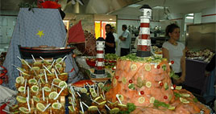
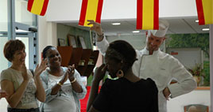

|
Départ d’Olivier LESAGE, cuisinier de la SOGERES |
 |
|
Mercredi, 31 Août 2011 00:00 |
|
Tristesse, sourires et larmes mélées étaient au rendez vous, le 30 juin 2011, au moment de remercier Olivier Lesage, cuisinier de la société SOGERES pour les huit ans passés au service de la restauration de l’IMED.
M Bouverat , dans un discours émouvant, évoqua le choix de l’IMED de s’engager dans la gestion de la cantine et remercia Olivier Lesage pour la qualité du travail qu’il avait produit tout au long de ces huit années passées sur le site de Claye.
|
|
Olivier, en remerciant chaleureusement les jeunes de l’ESAT, leur demanda de maintenir la qualité du travail qu’ils savaient produire. Il ajouta qu’il serait heureux de les accueillir dans ses futures cuisines, pour un stage ou, pourquoi pas, pour un emploi.
Pour cloturer cette cérémonie toute en discrétion, chacun avait préparé le cadeau qui ferait date. Au nom du personnel et de ses deux collègues, Haby et Angélique lui remirent, les larmes aux yeux une magnifique montre. Balou illumina de son sourire un au revoir plein d’émotion, en lui remettant, sous les applaudissemnts nourris de MALIKA et HABY un bracelet au nom de ses collègues (photo ci –dessous à droite).
|
|  |
MAIS QUE SE
PASSE T' IL
A L’IMED ?
|

|
|
C’était l’occasion de dérouler le souvenir de la qualité du travail réalisé quotidiennement par l’équipe de l’EPMS sous le regard attentif d’Olivier Lesage. Sur un immense buffet dressé dans la cuisine, les éléments de décoration des huit derniers repas de fin d’année étaient installés en guise de repère.
2001 : la mer ; 2005 : la corrida ; 2006 : le Mexique ;
Les enfants et le personnel de l’IMED sûrent apprécier cette dernière attention avec tout l’appétit qu’elle méritait.
 Voir les menus du réfectoire Voir les menus du réfectoire
|
 |
|
|
Mise à jour le Samedi, 24 Octobre 2015 10:53 |